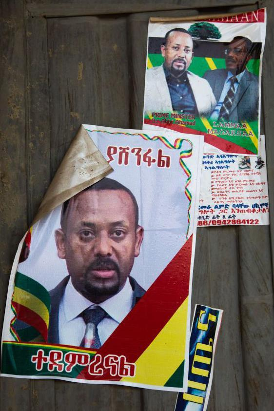

by voice of fano
በገዢው ብልፅግና ፓርቲ በተለይም በአዲስ አበባ ከተማ ቅርንጫፍ ፅህፈት ቤት ስር የሚንቀሳቀሱ እና ‘የሚዲያ ሠራዊት’ የሚል መጠሪያ ያላቸው የፓርቲው አባላት፤ መንግሥትን በሚተቹ እና በሚቃወሙ ግለሰቦች ላይ በፌስቡክ በተደረጉ የሐሰተኛ መረጃ እንዲሁም ‘የጥላቻ ንግግር’ ተብለው ሊቆጠሩ የሚችሉ ጽሑፎች እና ምስሎች ሥርጭት ላይ እንደተሳተፉ ቢቢሲ ያደረገው ምርመራ አረጋገጠ። የአዲስ አበባ ከተማ አስተዳደር የወረዳ አመራሮችም በፓርቲው የወረዳ መዋቅሮች ትዕዛዝ በተለይም የመንግሥትን ገፅታ በሰው ሰራሽ መንገድ ለመገንባት ፌስቡክ ላይ በሚደረጉ አሳሳች ዘመቻዎች ላይ እንደሚሳተፉም ምርመራው አሳይቷል። ቢቢሲ ለዚህ ዘገባ በአዲስ አበባ ከተማ የወረዳ አመራር፣ የፓርቲ አባል እንዲሁም በከተማዋ እና በፌደራል መንግሥት መሥሪያ ቤቶች ውስጥ የሚሰሩ የኮሚዩኒኬሽን ኃላፊዎች እና ባለሙያዎች አነጋግሯል።
ቢቢሲ፤ የአዲስ አበባ ከተማ ሰባት ክፍለ ከተሞች ውስጥ የሚገኙ የፓርቲው የወረዳ መዋቅሮች በዋትስአፕ እና ቴሌግራም ግሩፖች ውስጥ ለሶሻል ሚዲያ ዘመቻዎች የተለዋወጧቸውን መልዕክቶች ተመልክቷል። በግሩፖቹ ውስጥ ለወረዳ አመራሮች እና ሚዲያ ሠራዊት አባላት የሚሰጡ ትዕዛዞችን እና አፈጻጸማቸውን ተከታትሏል። የፌስቡክ ዳታዎችን በመውሰድም ተንትኗል። የፌስቡክ እናት ኩባንያ ሜታ፤ ለቢቢሲ በሰጠው ምላሽ “ሐሰተኛ አካውንቶችን” በመጠቀም “በኢትዮጵያ መንግሥት” የፌስቡክ ልጥፎች ላይ “ብዛት ያላቸው አዎንታዊ አስተያየቶች” መሰጠታቸውን በምርመራ እንደደረሰበት አስታውቋል። ሜታ፤ በዚህ ድርጊት ላይ በተሳተፉ ሐሰተኛ አካውንት እና ገፆች ላይ እርምጃ መውሰዱን የገለጸ ሲሆን፣ ቢቢሲ ሲከታተላቸው የነበሩ አካውንቶችም እንዲወገዱ ተደርገዋል።
የብልፅግና ፓርቲ በበኩሉ ‘የሚዲያ ሠራዊት’ የሚባል አደረጃጀት “አለመኖሩን” በመግለፅ ለቢቢሲ በሰጠው የፅሁፍ ምላሽ ጉዳዩን አስተባብሏል። የፓርቲው ዋና ፅህፈት ቤት፤ “በተለይ ‘ሐሰተኛ መረጃ እና የጥላቻ ንግግር ተብለው ሊቆጠሩ የሚችሉ ጽሑፎች እና ምስሎች [ተሠራጭተዋል]’ በሚል የተገለጸው ፍጹም ተቀባይነት የሌለው አገላለጽ ነው” ብሏል። ቢቢሲ፤ የብልፅግና ፓርቲ ‘የሚዲያ ሠራዊት’ አባላት ፌስቡክ ላይ የሚያደርጓቸውን ዘመቻዎች በተመለከተ ለሦስት ወራት ያካሄደውን ምርመራ ውጤት፤ በዚህ ዝርዝር ዘገባ አጠናቅሯል።
ከሦስት ወራት በፊት ጥር 2/2016 ዓ.ም. ከቀኑ ዘጠኝ ሰዓት ገደማ ጀምሮ “አቡነ ጴጥሮስ ከሀገር ኮበለሉ” የሚሉ ልጥፎች በበርካታ የኢትዮጵያውያን የፌስቡክ አካውንቶች እና ገጾች መሠራጨት ጀመሩ። በፎቶ እና ጽሁፍ ከተቀናበረ ምስል ጋር የተሠራጩት እነዚህ ልጥፎች ፌስቡክ ላይ የወጡት፤ የኢትዮጵያ ኦርቶዶክስ ቤተ ክርስቲያን ሲኖዶስ ዋና ፀሐፊ አቡነ ጴጥሮስ ከአዲስ አበባ ወደ አሜሪካ መጓዛቸውን ተከትሎ ነበር። የኒው ዮርክ እና አካባቢው ሀገረ ስብከት ሊቀ ጳጳስ የሆኑት አቡነ ጴጥሮስ ከሀገር የወጡት፤ “ይፋዊ የሆነውን መደበኛ የአሠራር ሥርዓት ተከትለው” እንደሆነ ቢቢሲ ከቤተ ክርስቲያኗ ያገኘው መረጃ ያመለክታል። በዕለቱ የተሠራጩት ሦስት ዋነኛ ጽሁፎች “ሰበር መረጃ፤ አቡነ ጴጥሮስ ከሀገር ኮበለሉ”፣ “አሜሪካዊው አቡነ ጴጥሮስ ከሀገር ኮብልለዋል!” እና “ከአሜሪካዊ አቡነ ጴጥሮስ ኩብለላ ጀርባ ያሉ እውነታዎች!” የሚል መግቢያ ያላቸው ናቸው። ጽሁፎቹ አቡነ ጴጥሮስን፤ “በቤተ ክህነት ውስጥ ህቡዕ የፖለቲካ አደረጃጀት በመምራት” እና “የቤተክህነት ሃብት የሆነ በርካታ ገንዘብ እና ንብረት ይዞ በመጥፋት” ይከስሳሉ። ከሦስቱ ጽሁፎች ውስጥ በብዛት የተሠራጨው “ሰበር መረጃ፤ አቡነ ጴጥሮስ ከሀገር ኮበለሉ” የሚለው ሲሆን፣ ይህ ጽሁፍ በጥር 2 እና 3/2016 ዓ.ም. ብቻ ቢያንስ 1,004 ጊዜ በተለያዩ የፌስቡክ አካውንት እና ገጾች እንደተለጠፈ ቢቢሲ አረጋግጧል። ከግራፊክስ ምስሎች ጋር የተለጠፈው ይህ ጽሁፍ፤ ጥር ሁለት ቀን ብቻ ይህ ቢያንስ 898 ጊዜ ፌስቡክ ላይ ተጋርቷል።
አቡነ ጴጥሮስ “ኮብልለዋል” በሚል ፌስቡክ ላይ ከተሠራጩት ልጥፎች ውስጥ አብዛኛዎቹ “#ፅንፈኝነት_ይውደም” እና “#መከላከያ_የሀገር_ጋሻ” የሚል ሀሽታግ ተያይዞባቸዋል። የኢትዮጵያ ኦርቶዶክስ ቤተ ክርስቲያን “የማኅበራዊ ሚዲያዎች ላይ እየተናፈሰ ያለው ወሬ እጅግ የተሳሳተ” መሆኑን በመጥቀስ ጉዳዩን ያስተባበለችው በማግስቱ ነበር። ቢቢሲ ስለጉዳዩ ጥያቄ ያቀረበላቸው አቡነ ጴጥሮስ፤ አስተያየት መስጠት እንደማይፈልጉ ገልጸዋል። ይህ መልዕክት ከተሰራጨ ከአንድ ወር ገደማ በኋላ “ኮብልለዋል” የተባሉት አቡነ ጴጥሮስ ወደ ኢትዮጵያ ቢመለሱም ከአዲስ አበባ ቦሌ ዓለም አቀፍ አየር ማረፊያ ወደ መጡበት እንዲመለሱ ተደርገዋል። በዕለቱ ስለ ሲኖዶሱ ዋና ፀሐፊ “መኮብለል” ፌስቡክ ላይ የተሠራጩት ልጥፎች፤ በመደበኛ የፌስቡክ ተጠቃሚዎች የተሰራጩ የተለመደው ዓይነት የሐሰተኛ መረጃ አልነበሩም። ቢቢሲ ባደረገው ክትትል፤ የመረጃዎቹ ሥርጭት ካለፈው ዓመት ጥር ጀምሮ ከቤተክርስቲያኒቱ ጋር ቅራኔ ውስጥ የገባውን መንግሥት ከመሠረተው ገዢው ብልፅግና ፓርቲ ጋር ግንኙት እንዳለው የሚያሳዩ ማስረጃዎችን አግኝቷል።
መንግሥት ጥር 2015 ዓ.ም. ከኢትዮጵያ ኦርቶዶክስ ቤተክርስቲያን ሲኖዶስ ላፈነገጡ የሃይማኖት አባቶች “ድጋፍ ሰጥቷል” በሚል ጎልቶ የወጣው የሁለቱ አካላት መቃቃር፤ አንዳንድ የቤተክርስቲያኗ አባቶች ታጣቂዎችን ደግፈው ያደረጉትን ንግግርን ተከትሎ በዚህም ዓመት ጥር ወርም ቀጥሎ ነበር። የሲኖዶስ ዋና ፀሐፊው አቡነ ጴጥሮስ መኮብለላቸውን ከሚገልጹት ጽሁፎች ጋር የተያያዙት ምስሎች ምንጮች መካከል የገዢው ብልፅግና ፓርቲ የአዲስ አበባ ፅህፈት ቤት የወረዳ መዋቅሮች የዋትስአፕ ግሩፖች እንደሚገኙበት ቢቢሲ ባደረገው ክትትል አረጋግጧል። የዋትስአፕ ግሩፖቹ የፓርቲው የወረዳ መዋቅሮች በማኅበራዊ ሚዲያ ላይ በዘመቻ መልክ እንዲሰራጩ የሚፈልጉ መልዕክቶችን ‘ለሚዲያ ሠራዊት’ አባላት የሚያስተላልፉባቸው ናቸው። ቢቢሲ፤ ከእነዚህ የዋትስአፕ ግሩፖች መካከል በአንዱ በሚዲያ ሠራዊት አባላቱ እና በኃላፊዎቻቸው መካከል የሚደረጉ የመልዕክት ለውውጦችን፣ የሚተላለፉ ትዕዛዞችን እና የሚደረጉ ዘመቻዎችን ይዘት ለወራት ሲከታተል ቆይቷል። የዋትስአፕ ግሩፑ ቂርቆስ ክፍለ ከተማ ብልፅግና ፓርቲ ቅርንጫፍ ፅህፈት ቤት ስር በሚገኝ በአንድ ወረዳ የፓርቲ ፅህፈት ቤት የሚተዳደር ነው።
አቡነ ጴጥሮስ ወደ አሜሪካ በሄዱበት ጥር 2 ቀን የዚህ ግሩፕ አባላት፤ የሲኖዶሱን ዋና ፀሀፊ ምሥል የያዙ እና መኮብለላቸውን የሚገልጽ ጽሁፍ ያለባቸው 19 ምስሎችን ፌስቡክ ላይ እንዲያሠራጩ ትዕዛዝ ተሰጥቷቸዋል። የግሩፑ አስተዳዳሪ እነዚህን ምስሎች ሲልክ፤ የግሩፑ አባላት ምሥሎቹን “ኢንፎርማል” በሆኑ የፌስቡክ ገጾቻቸው “በስፋት” እንዲያሠራጩም ትዕዛዝ አስተላልፏል። ለወረዳው የሚዲያ ሠራዊት አባላት የተላከው መልዕክት፤ “ይህንን መልዕክት በሁሉም ኢንፎርማል ገጾች በሙሉ በስፋት እንዲሠራጭ በንቃት አስተባብሩ። የማይሳተፍ የእኛ መዋቅር እንዳይኖር። ሁሉም ይሳተፉ” የሚል ትዕዛዝን የያዘ ነው። በዋትስአፕ ግሩፑ ውስጥ የተላኩት ምሥሎች ፌስቡክ ላይ ከተሠራጩት ጽሁፎች ጋር ከተያያዙት ምሥሎች ጋር ተመሳሳይ ናቸው። ሦስቱ ጽሁፎች ግን ለዚህ ለግሩፕ አባላት እንዳልተላኩ ቢቢሲ ተመልክቷል። የብልፅግና የሚዲያ ሠራዊት አባላት በዚህ ዘመቻ እንዲሳተፉ ያደረገው የቂርቆስ ክፍለ ከተማ የወረዳ የፓርቲ መዋቅር ብቻ አልነበረም። በቦሌ ክፍለ ከተማ ውስጥ የሚገኙ የብልፅግና ፓርቲ አባላትም የአቡኑን “መኮብለል” የሚገልጹ ጽሁፎች እና ምሥሎች እንደተላኩላቸው ለደኅንነታቸው ሲባል ስማቸው የማይጠቀስ በቦሌ ክፍለ ከተማ የወረዳ አመራር የሆኑ ግለሰብ ለቢቢሲ አረጋግጠዋል።
በወረዳው የፓርቲ ቅርንጫፍ ፅህፈት ቤት አመራር አባላት የዋትስአፕ ግሩፕ ላይ እነዚህ ምሥል እና ጽሁፎች የተላኩት፤ “ዘመቻ (ካምፔይን) አድርጉ” ከሚል ትዕዛዝ ጋር መሆኑን ምንጩ ገልዋል። “[ግሩፑ ላይ የተላከው ጽሁፍ] የአቡነ ጴጥሮስን ዜግነት ይገልጽና ‘ከሀገር ወጡ፣ ኮበለሉ’ ይላል። ‘የውጭ ዜግነታቸውን ሽፋን አድርገው የተለያዩ የሐሰት ሰነዶችን በማዘጋጀት ከሀገር በሕገ ወጥ መንገድ ወጥተዋል’ ይላል” ሲሉ በዋትስአፕ ግሩፑ ላይ የተለቀቀው ጽሁፍ በዕለቱ በፌስቡክ ላይ ከተሠራጨው ጋር ተመሳሳይ እንደሆነ ለቢቢሲ አረጋግጠዋል። የአቡነ ጴጥሮስ ጉዳይ፤ በአዲስ አበባ ከተማ ብልፅግና ፅህፈት ቤት የወረዳ መዋቅሮች አስተባባሪነት የተደረገ ብቸኛው የፌስቡክ ዘመቻ አይደለም።
በአዲስ አበባ ከተማ ከወረዳ እስከ ክፍለ ከተማ የሚገኙ አመራሮች በማኅበራዊ ሚዲያ ዘመቻዎች ላይ ይሳተፋሉ። በከተማዋ ከ500 በላይ የክፍለ ከተማ እና ከ3,500 በላይ የወረዳ አመራሮች አሉ።
የፓርቲው የአዲስ አበባ የወረዳ መዋቅሮች የመንግሥትን ገፅታ የሚገነቡ ጽሁፍ፣ ምሥል እና ቪድዮዎችን በዘመቻ መልክ በፌስቡክ በተደጋጋሚ ሲያሰራጩ እንደነበር ቢቢሲ አረጋግጧል። ቢቢሲ፤ የየካ፣ አቃቂ ቃሊቲ፣ ንፋስ ስልክ ላፍቶ፣ ለሚ ኩራ፣ ጉለሌ እና ኮልፌ ቀራኒዮ ክፍለ ከተሞች የፓርቲ የወረዳ መዋቅሮች ከሚዲያ ሠራዊት አባላት ጋር መልዕክት የሚለዋወጡባቸው ሌሎች ስድስት የቴሌግራም ግሩፖችን አግኝቷል። ቢቢሲ ያነጋገራቸው የብልፅግና ፓርቲ አባላት እንዲሁም በፌደራል እና በአዲስ አበባ ከተማ የመንግሥት ተቋማት ውስጥ የሚሠሩ የመንግሥት ኮሚዩኒኬሽን ኃላፊዎች እና ባለሙያዎች የፌስቡክ ዘመቻዎቹ የሚከናወኑት በፓርቲው ‘የሚዲያ ሠራዊት’ አባላት እንዲሁም የወረዳ አመራሮች እንደሆነ ገልጸዋል። ዘመቻዎቹ የሚያካሄዱት የመንግሥት እና የፓርቲ “ትርክቶች የበላይነት እንዲኖራቸው” መሆኑንም ምንጮቹ ተናግረዋል። ‘የሚዲያ ሠራዊት’ በመባል የሚጠሩት በወጣት እና በሴቶች ሊጎች ውስጥ በአባልነት የሚሳተፉ እንዲሁም ‘ማኅበረሰብ አንቂ’ ተብለው የሚመረጡ ግለሰቦች እንደሆኑ ቢቢሲ ካነጋገራቸው ምንጮች እንዲሁም ከተመለከታቸው የዋትስአፕ እና የቴሌግራም ግሩፖች የመልዕክት ልውውጦች ተረድቷል።
የአዲስ አበባ ከተማ የወረዳ አመራሮች በዚህ እንቅስቃሴ ላይ እንደሚሳተፉ የወረዳ አመራር የሆኑት ግለሰብ እንዲሁም በከተማ አስተዳደሩ መዋቅሮች የኮሚዩኒኬሽን ኃላፊ እና ባለሙያ የሆኑ አራት ምንጮች ለቢቢሲ ተናግረዋል። ቢቢሲ፤ በቂርቆስ እና የካ ክፍለ ከተሞች የወረዳ ፓርቲ ፅህፈት ቤቶች የዋትስአፕ እና ቴሌግራም ግሩፖች የመልዕክት ልውውጥ ላይ ያደረገው ክትትል ምንጮች የተናገሩትን የሚያረጋግጥ ነው። ከ30 በላይ አባላት ባሉት የየካ ክፍለ ከተማ አንድ ወረዳ የቴሌግራም ግሩፕ ውስጥ የተደረጉ የመልዕክት ልውውጦች፤ የግሩፑ አባላት በወረዳው አስተዳደር ውስጥ የተለያዩ ፅህፈት ቤቶች ኃላፊዎች እንደሆኑ የሚያሳይ ነው። ቢቢሲ፤ የወረዳ አመራር እንደሆኑ ያረጋገጣቸው ግለሰቦች በግሩፑ ውስጥ ይገኛሉ። በከተማዋ ወረዳ ውስጥ ውስጥ የሚገኙ ሁሉም አመራሮች ከፓርቲው በተሰጣቸው “አቅጣጫ” መሠረት ከአንድ በላይ የፌስቡክ አካውንት እንዲኖራቸው መደረጉን ቢቢሲ ያነጋገራቸው ሦስት ምንጮች ገልጸዋል። ይህ ዓይነቱ ተጨማሪ አካውንት በዋትስአፕ እና በቴሌግራም ግሩፖቹ ውስጥ የሚጠቀሰው “ኢንፎርማል ገፅ” በሚል ነው። የወረዳ አመራሮች በማኅበራዊ ሚዲያ ላይ የሚያደርጉት ተሳትፎ በፈቃደኝነት ብቻ የሚደረግ አለመሆኑን ቢቢሲ ያገኛቸው መረጃዎች ያመለክታሉ። የአመራሮቹ የማኅበራዊ ሚዲያ አጠቃቀም ጉዳይ የግምገማ አጀንዳም እንደሆነ በአዲስ አበባ ከተማ የወረዳ አመራር፣ የክፍለ ከተማ ኮሚዩኒኬሽን ኃላፊ እና በከተማ አስተዳደሩ አንድ ቢሮ ውስጥ የሚሠሩ የኮሚዩኒኬሽን ባለሙያ ለቢቢሲ ተናግረዋል። በከተማዋ ወረዳዎች ውስጥ የሚካሄደው ሥራ የሚገመገመው እና “የፖለቲካ አቅጣጫ” የሚሰጠው ከወረዳው አስተዳደር እና የፓርቲ መዋቅር የተወጣጡ አምስት “ኮር አመራሮችን” በያዘ “አስተባባሪ ኮሚቴ” መሆኑን አንድ የወረዳ አመራር ገልጸዋል። በዚህ ኮሚቴ የሚደረጉ ግምገማዎች ላይ የማኅበራዊ ሚዲያ አጠቃቀም ጉዳይ አንድ አጀንዳ ሆኖ እንደሚቀርብ የሚናገሩት ምንጩ፤ “‘ካምፔይን አድርጉ’ ተብሎ የተሰጠው አጀንዳ ላይ [አንድ አመራር አባል] ካልተሳተፈ ተጠያቂነት አለው። ‘ከ30 ምናምን [የወረዳ] አመራር ይህንን ያህሉ ተሳትፏል’ ይባላል። ስክሪን ሻት ተደርጎ ወደ ላይ ይተላለፋል። ወደ ክፍለ ከተማ [ተላልፎ] እከሌ እከሌ ተሳትፏል እከሌ እከሌ አልተሳተፈም ይባላል” ሲሉ ተጠያቂነት የሚያስከትል ጉዳይ መሆኑን ያስረዳሉ።
ቢቢሲ በተመለከታቸው የቴሌግራም እና ዋትስአፕ ግሩፖች ውስጥ የሚገኙ የወረዳ አመራሮች እና የሚዲያ ሰራዊት አባላት ፌስቡክ ላይ ፖስት፣ ኮሜንት ወይም ሼር ማደረጋቸውን የሚያረጋግጥ ስክሪንሻት እንዲልኩ ይጠየቃሉ።
በክፍለ ከተማም ቢሆን ይህ አይነት ግምገማ እንደሚካሄድ አንድ የክፍለ ከተማ የኮሚዩኒኬሽን ኃላፊ ለቢቢሲ ተናግረዋል። ግምገማዎችን የሚመሩ የፓርቲ ኃላፊዎች፤ በመንግሥት እና በፓርቲው ገጾች ላይ የሚኖሩ ልጥፎችን በተመለከተ “ለምንድነው ላይክ፣ ሼር የማታደርጉት?” የሚል ጥያቄ ለተሳታፊዎቹ እንደሚያቀርቡም ገልጸዋል። ቢቢሲ በተመለከታቸው የፓርቲው የተለያዩ ወረዳዎች የፓርቲ መዋቅር የዋትስአፕ እና የቴሌግራም ግሩፖች ላይም የአባላቱ የማኅበራዊ ሚዲያ ተሳትፎ በተደጋጋሚ ይነሳል። የሚዲያ ሠራዊት አባላት ላክይ፣ ኮሜንት እና ሼር ማድረጋቸውን የሚያሳይ “ስክሪን ሻት” እንዲልኩ እንደሚጠየቁ ቢቢሲ በግሩፑ ከተደረጉ የመልዕክት ልውውጦች ተመልክቷል። የወረዳ አመራሮች እና የሚዲያ ሠራዊት የፌስቡክ አካውንቶቻቸውን ሊንክ እንዲልኩ እንዲሁም የፌስቡክ አካውንታቸው የተቆለፈ (lock) የፓርቲው አባላት “ለኢንስፔክሽን” ሲባል እንዲከፍቱ የሚጠይቁ ትዕዛዞች በግሩፖቹ ውስጥ ተላልፈው አግኝቷል። የአዲስ አበባ ከተማ አስተዳደር የወረዳ አመራሮች በማኅበራዊ ሚዲያ ላይ የሚያደርጉትን ይህንን እንቅስቃሴ እና የሐሰተኛ መረጃ እና የጥላቻ ንግግር ሥርጭት ላይ ያላቸውን ተሳትፎ አስመልክቶ የከተማ አስተዳደሩን አስተያየት ለማግኘት ቢቢሲ ያደረጋቸው ተደጋጋሚ ጥረቶች አልተሳኩም።
የከተማዋ የኮሚዩኒኬሽን ቢሮ ኃላፊ ወ/ሮ እናትአለም መለሰ ጥያቄው በደብዳቤ እንዲቀርብላቸው ጠይቀው ቢቢሲ ይህንኑ ቢያደርግም ምላሽ አልሰጡም። የብልፅግና ፓርቲ ዋና ፅህፈት ቤት በበኩሉ ለቢቢሲ በሰጠው የፅሁፍ ምላሽ በፓርቲው መዋቅር ውስጥ ‘የሚዲያ ሠራዊት’ የሚባል አደረጃጀት አለመኖሩን በመግለፅ ጉዳዩን አስተባብሏል። ፓርቲው፤ የመንግሥትን እና የከፍተኛ ባለሥልጣናትን ገጽታ ሰው ሰራሽ በሆነ መንገድ ለመገንባት በሚልም “ከመደበኛው የማኅበራዊ ሚዲያ ዓላማ የተለየ እንቅስቃሴ እንደማያደርግ” በምላሹ ላይ አስፍሯል። የፓርቲው አባላት “በገጾቹም ሆነ በግል አካውንቶቻቸው የፓርቲውን አቋሞች እንዲያራምዱ” እና ፓርቲው ላይ “ባለመረዳትም ሆነ ሆን ተብለው በሚደረጉ ዘመቻዎች ላይ በፓርቲው መርሆዎች ላይ ተመሥርተው የአጸፋ ምላሽ እንዲሰጡ እንደሚያበረታታ” ገልጿል። ዋና ፅህፈት ቤቱ፤ “ሆኖም የማኅበራዊ ሚዲያን በአዎንታዊ መልኩ ከመጠቀም ውጪ፣ [የፓርቲው አባላት] የሐሰት አካውንቶችን እንዲከፍቱም ሆነ አንድ አይነት (monotonous) መልዕክት እንዲያስተላለፉ ፈጽሞ አያደርግም” ሲል ራሱን ተከላክሏል።
ጠቅላይ ሚኒስትር ዐቢይ አሕመድ በ2010 ዓ.ም. ወደ ሥልጣን ሲመጡ ከፍተኛ የሕዝብ ድጋፍ አግኝተዋል
ከስድስት ዓመት በፊት የጠቅላይ ሚኒስትር ዐቢይ አሕመድ አስተዳደር ወደ ሥልጣን እንዲወጣ ካደረገው የፖለቲካ ለውጥ በኋላ ማኅበራዊ ሚዲያ በኢትዮጵያ ፖለቲካ ውስጥ ያለው ተጽዕኖ “በጣም ከፍተኛ” መሆኑን የመብቶች እና ዴሞክራሲ ዕድገት ማዕከል (ካርድ) ዋና ዳይሬክተር አቶ በፍቃዱ ኃይሉ ይናገራሉ። በ2008 ዓ.ም. በተለይም በኦሮሚያ ክልል የተቀጣጠለው ተቃውሞ የተመራው ፌስቡክ ላይ የአድማ መንገዶችን ሲጠቁሙ እና አቅጣጫ ሲያሳዩ በነበሩ የፖለቲካ አክቲቪስቶች ነበር። በዚህ ተቃውሞ የተነሳ ወደ ሥልጣን የመጣው የጠቅላይ ሚኒስትር ዐቢይ አስተዳደር፤ በአሁኑ ሰዓት “የቅቡልነት ቀውስ የገጠመው እንደሚመስል” አቶ ፍቃዱ ያስረዳሉ። የካርድ ዋና ዳይሬክተር፤ “በሕዝብ ብዛታቸው ትልቅ በሆኑት በኦሮሚያ፣ በአማራ [ክልሎች] እንዲሁም በጣም በተጽእኖ ከፍተኛ በሆነው ትግራይ ክልል ውስጥ ያለው ከፍተኛ አለመረጋጋት” ለዚህ የቅቡልነት መሳሳት ምክንያት ዋነኛ ምክንያት መሆናቸውን ይጠቅሳሉ። “የፀጥታ መደፍረስ፣ ከፀጥታ መደርፈሱ ጋር ተያይዘው የመጡ የኢኮኖሚ ቀውሶች፣ የሰብአዊ መብቶች ጥሰቶች፣ የዜጎች የእንቅስቃሴ ገደብ [እና ሌሎች] በርካታ ችግሮች [የመንግሥትን] ቅቡልነት እየጎዱበት መጥተዋል። 'የሕግ የበላይነት ተሸርሽሯል፣ ሙስና እየጨመረ ነው' የሚሉ ተስፋ መቁረጦች በብዙኃን ዘንድ አለ” ሲሉም ሌሎች ምክንያቶችንም ይጠቅሳሉ።
በእነዚህ ምክንያቶች በሕዝብ ላይ የተፈጠረው ቅሬታ በማኅበራዊ ትስስር ገጾች ላይ መንጸባረቃቸው “ጠቅላይ ሚኒስትሩ ብዙ ወዳጅ እና ደጋፊ የላቸውም የሚል ምልከታን (impression)” ፈጥሯል ብለው እንደሚያምኑ አቶ በፍቃዱ ገልጸዋል። በጠቅላይ ሚኒስትሩ ልጥፎች ስር ወይም እሳቸው በሚታዩባቸው ቪዲዮ “አዎንታዊ የሆኑ፣ ውዳሴ የበዛባቸው፣ እውነተኛ እና ተፈጥሯዊ የማይመስሉ” ኮሜንቶች ሲሰጡ ማስተዋላቸውን የሚናገሩት አቶ በፍቃዱ፤ ይህ እንቅስቃሴ መንግሥት በተለያዩ ምክንያቶች ያጣውን “ይሁንታ እና ቅቡልነት የማምረት ዘዴ” እንደሚመስል ያክላሉ። ቢቢሲ በተመለከተው የቂርቆስ ክፍለ ከተማ ወረዳ ዋትስአፕ ግሩፕ ውስጥ ጠቅላይ ሚኒስትሩ በሕዝብ ተወካዮች ምክር ቤት ቀርበው ማብራሪያ ሲሰጡ፤ አልያም የእሳቸው ንግግር በመንግሥት መገናኛ ብዙኃን በሚተላለፍበት ወቅት በተለያዩ ቋንቋዎች የሚዘጋጁ አስተያየቶች (ኮሜንቶች) ለሚዲያ ሠራዊት አባላት ይላካሉ። ጠቅላይ ሚኒስትር አብይ ጥር 28/2016 ዓ.ም. የመንግሥታቸውን የስድስት ወራት የሥራ አፈጻጸም በተመለከተ ከፓርላማ አባላት ለቀረብላቸው ጥያቄዎች ማብራሪያ ለመስጠት በተገኙበት ወቅት የነበረውን የሚዲያ ሠራዊት አባላት እንቅስቃሴ በምሳሌነት እንውሰድ።
ጠቅላይ ሚኒስትሩ በፓርላማ በቀረቡበት ዕለት 93 የተዘጋጁ ኮሜንቶች ለዋትስአፕ ግሩፕ አባላቱ ተልከዋል። ከስብሰባው መጠናቀቅ በኋላ ደግሞ የጠ/ሚ ዐቢይን ምስል እና ንግግር የያዙ 26 ግራፊክስ ምሥሎችን በግሩፑ ላይ ተለቅቀዋል።
በዚህ ዕለት የዋትስአፕ ግሩፑ አባላት ጠቅላይ ሚኒስትር ዐቢይን፣ መንግሥትን እና ብልፅግና ፓርቲን የሚያወድሱ ጽሁፎች ኮሜንት እንዲያደርጉ ተልኮላቸዋል። ስብሰባውን ቀጥታ እያስተላለፈ በነበረው የጠቅላይ ሚኒስትሩ ገጽ ላይ ኮሜንት እንዲደረጉ የተላኩት 93 መልዕክቶች፤ በአማርኛ እና ኦሮምኛ ቋንቋ የተዘጋጁ ናቸው። የፓርላማ ውሎው የመጀመሪያ ክፍል በጠቅላይ ሚኒስትሩ የፌስቡክ ገጽ ላይ በቀጥታ ሲተላለፍ አስር ሺህ አስተያየቶች ተሰጥተዋል። ቢቢሲ፤ የፌስቡክ ኮሜንቶችን በሰነድ መልክ ለማውጣት የሚያስችል መገልገያ (tool) በመጠቀም አምስት ሺህ ያህሉን በዘፈቀደ መንገድ ለዳሰሳ መርጧል። በተመረጡት ኮሜንቶች ላይ የተደረገው ዳሰሳ፤ በዋትስአፕ ግሩፑ ውስጥ የተላኩት ጽሁፎች ቢያንስ 160 ጊዜ ኮሜንት እንደተደረጉ አሳይቷል። ቢቢሲ፤ የጠቅላይ ሚኒስትሩ ፅህፈት ቤት በዐቢይ አሕመድ የፌስቡክ ገፅ ላይ ይህ አይነቱ እንቅስቃሴ እየተደረገ ስለመሆኑ ያውቅ እንደሆነ ለፅህፈት ቤቱ ቃል አቀባይ ያቀረበው ጥያቄ ምላሽ አላገኘም። በዚህ ዓይነት መልኩ የተዘጋጁ ጽሁፎች አስተያየት የተሰጡበት ሌላኛው ወቅት “ከአቃቂ እስከ ጫካ” የተሰኘው ፕሮግራም በኢትዮጵያ ብሮድካስቲንግ ኮርፖሬሽን (ኢቢሲ) የፌስቡክ ገጽ ላይ ቀጥታ ሲተላለፍ ነው። ጥር 8 እና 9/2016 ዓ.ም. በሁለት ተከታታይ ክፍሎች የቀረበው ይህ ፕሮግራም፤ ጠቅላይ ሚኒስትር ዐቢይ አሕመድ በአዲስ አበባ ከተማ ውስጥ የተገነቡ እና በሂደት ላይ ያሉ “ሜጋ ፕሮጀክቶችን” ለባለሥልጣናቶቻቸው ሲያስጎበኙ የታየበት ነው።
በፕሮግራሙ በተላለፈባቸው ቀናት የዋትስአፕ ግሩፑ አባላት በአማርኛ፣ በኦሮምኛ እና በእንግሊዝኛ ቋንቋዎች የተዘጋጁ 128 ጽሁፎችን በኢቢሲ ገጽ ላይ ኮሜንት እንዲያደርጉ ተልኮላቸዋል። ቢቢሲ፤ በመጀመሪያው ቀን በተላለፈው ፕሮግራም ላይ በተሰጡ ኮሜንቶች ላይ ባደረገው ማጣራት ለዋትስአፕ ግሩፑ አባላት የተላኩት 49 ጽሁፎች 108 ጊዜ ኮሜንት ተደርገው አግኝቷል። በመጀመሪያው ክፍል ፕሮግራም ሲተላለፍ ፌስቡክ ላይ የተሰጡት አስተያየቶች፤ በሌሎች የብልፅግና ፓርቲ መዋቅሮች የተዘጋጁ የሚመስሉ ጽሁፎችም በርካታ ጊዜ ኮሜንት እንደሚደረጉ የሚያመለክት ነው። ይህ ፕሮግራም ሲተላለፍ የተለያዩ የፌስቡክ አካውንት እና ገጾች ተመሳሳይ የሆነን ጽሁፍ በተደጋጋሚ ኮሜንት አድርገዋል። ከእነዚህ ጽሁፎች መካከል አንዱ፤ “የተፈጥሮ ሃብት የተረዳው ጠ/ሚ ዶ/ር ዓቢይ አህመድ የተፈጥሮ ስፍራዎችን በማሳመርና መሰረተ ልማቶች በሟሟላት እንዲሁም ዘመናዊ የቱሪስት ማረፊያዎችን በመስራት ላይ ይገኛል” የሚለው ነው። የተለያዩ የፌስቡክ አካውንቶች ይህንን ጽሁፍ ቢያንስ 78 ጊዜ ኮሜንት አድርገውታል። በእንግሊዝኛ የተዘጋጁ ሌሎች ጽሁፎችም ከ100 ጊዜ በላይ ኮሜንት ተደርገው ተገኝተዋል።
የአዲስ አበባ ከተማ ብልፅግና ፅህፈት ቤት በተለይም የከተማው አስተዳደር የሚያሠራቸው ፕሮጀክቶችን የሚያደንቁ ጽሁፎች፣ ምሥሎች እና ቪድዮችን በማዘጋጀት በዘመቻ መልክ በተደጋጋሚ እንደሚያሠራጭ ቢቢሲ በወረዳው ብልፅግና የዋትስአፕ ግሩፕ ላይ ባደረገው ክትትል አረጋግጧል። በየካቲት ወር የተመረቀው የአድዋ ድል መታሰቢያ ከምርቃት ሥነ ሥርዓቱ ሳምንታት አስቀድሞ ፕሮጀክቱን የሚያወድሱ ዘመቻዎች ተደርገውለታል። በመጋቢት ወር ላይ ደግሞ የከተማ አስተዳደሩ እያካሄደ ባለው የመንገድ ኮሪደሮች ልማት ምክንያት በፒያሳ አካባቢ የሚገኙ ህንጻ እና ቤቶች መፍረስን የሚቃወሙ ሰዎችን የሚተቹ ምሥሎች በዘመቻ መልክ ፌስቡክ ላይ እንዲሠራጩ ተደርጓል። “ብዙ ሰዎችን በማሰለፍ በደቦ (mob)” ማህበራዊ ሚዲያ ላይ የሚንሸራሸሩ ሀሳቦችን ለመቆጣጠር በተቀናጀ መልኩ የሚደረጉ ዘመቻዎች፤ “ሐሳዊ ወይም አሳሳች ወደ ሆነ እንቅስቃሴ” እንደሚቀየሩ በአውስትራሊያው ሞናሽ ዩኒቨርስቲ የዲጂታል ሰብአዊ መብቶች ህግ (Digital Human Rights Law) ተመራማሪ የሆኑት ዶ/ር ዮሐንስ እንየው ይናገራሉ። ዶ/ር ዮሐንስ እንደሚያስረዱት፤ መንግሥትን የሚደግፉ አካውንቶች ወይም ቦቶች “ትክክለኛ ዜጋ በመምሰል” የሚያደርጓቸው እንቅስቃሴዎች በተለይም በምርጫ ወቅት የመራጮችን ሀሳብ የማዛባት እንዲሁም “መተማመን እና የመወሰን ብቃትን የመገዳደር ውጤት” ያስከትላሉ። ከዚህም ባሻገር ማ|ኅበራዊ ሚዲያን “በነቂስ በማጥለቅለቅ” የሚደረግ እንቅስቃሴ፤ መንግሥትን ሳይደግፉ ሀሳባቸውን “በንቃት የሚጽፉ ሰዎች ከመድረኩ እንዲወጡ ማድረጊያ መንገድ” መሆኑን ተመራማሪው ይገልጻሉ። ዶ/ር ዮሐንስ፤ “እንደዚህ ዓይነቶቹ እንቅስቃሴዎች ሲፈጠሩ ‘የመናገር ነጻነትን ሊገድብ ይችላል ወይም ደግሞ ማኅበራዊ ንግግርን፣ በማኅበራዊ ሚዲያ የሚካሄዱ ንግግሮችን ያቀጭጫል’ ስለሚባል፤ ዓለም አቀፍ የሲቪል እና የፖለቲካ መብቶች ቃልኪዳን አንቀጽ 19ን ስለሚጥስ፤ በዓለም አቀፍ የሰብአዊ መብት ሕግ እንደዚህ ዓይነት የተቀናጀ አሳሳች እንቅስቃሴ ሕገ ወጥ እንደሆነ መገንዘብ እንችላለን” ሲሉ አክለዋል።
የአድዋ መታሰቢያ ሙዚየምን አስመልክቶ ጥር 19፤ 2016 ዓ.ም. እንዲሰራጭ የተደረገው ይህ ፅሁፍ፤ በዕለቱ ቢያንስ 551 ጊዜ በተለያዩ አካውንቶች እና ገፆች ፌስቡክ ላይ ተለጥፏል።
የመንግሥትን ወይም የፓርቲውን ገጽታ መገንባት የብልፅግና ፓርቲ “የሚዲያ ሰራዊት” አባላት ብቸኛው ስራ አይደለም። መንግስትን የሚቃወሙ ጽሁፎችን ባጋሩ የፌስቡክ ገጾች ላይ ‘የሚዲያ ሠራዊቱ’ አባላት ተዘጋጅቶ የተሰጣቸውን ጽሁፎች ኮሜንት እንደሚያደርጉ ቢቢሲ አረጋግጧል። በዚህ ዓይነት መልኩ በፌስቡክ ልጥፋቸው ላይ አስተያየት ከተሰጠባቸው ግለሰቦች ውስጥ አንዱ የቀድሞው የሰላም ሚኒስትር ዲኤታ አቶ ታዬ ደንደአ ናቸው። ላለፉት አራት ወራት በእስር ላይ የሚገኙት አቶ ታዬ፤ ታኅሣሥ 1/2016 ዓ.ም. ከሥልጣን መነሳታቸውን የሚገልጽ ደብዳቤን በማያያዝ ጠቅላይ ሚኒስትር ዐቢይን በጠንካራ ቃላት የሚተች እና የሚወነጅል ጽሁፍ አጋርተው ነበር። ጠቅላይ ሚኒስትሩን “በሰው ደም የሚጫወቱ አረመኔ” በማለት የወነጀሉት የቀድሞው የሰላም ሚኒስትር ዲኤታ፤ ጽሁፉን ባጋሩበት ምሽት በቁጥጥር ስር ውለዋል። በዚያ ምሽት ላይ የዋትስአፕ ግሩፑ አስተዳዳሪ አቶ ታዬን የሚወቅሱ እና የሚያብጠለጥሉ 23 ጽሁፎች ለአባላቱ ልኳል። የቀድሞውን የሰላም ሚኒስቴር “ወንበዴ” ሲሉ ጭምር የሚጠሩት እነዚህ ጽሁፎች ሲላኩ የአቶ ታዬ የፌስቡክ ልጥፍ ሊንክም አብሮ ተያይዟል። የግሩፑ አስተዳዳሪ፤ “ሁሉም አመራር፣ አባል፣ ደጋፊ እና የሚዲያ ሠራዊት የተደራጀ አስተያየት ስጡበት። ሼር ወይም ላይክ [ማድረግ] ፈጽሞ የተወገዘ ነው” የሚል ትዕዛዝ አስተላልፏል። በአቶ ታዬ ልጥፍ ላይ ከ14,600 በላይ ጊዜ ኮሜንት ተሰጥቷል። ቢቢሲ ከእነዚህ ውስጥ አምስት ሺህ ያህሉን በመለየት ባደረገው ዳሰሳ፤ በዋትስአፕ ግሩፑ ላይ የተላኩት ጽሁፎች ቢያንስ 365 ጊዜ በአቶ ታዬ ፌስቡክ ልጥፍ ላይ ኮሜንት እንደተደረጉ አረጋግጧል።
የዋትስአፕ ግሩፑ አስተዳዳሪ የላካቸው ፅሁፎች በአቶ ታዬ የፌስቡክ ገፅ ላይ ቢያንስ 365 ጊዜ በተለያዩ አካውንቶች ኮሜንት መደረጋቸው ቢቢሲ አረጋግጧል።
በብልፅግና ፓርቲ ‘ሚዲያ ሠራዊት’ ዘመቻ ከተደረገባቸው አካላት መካከል የህዝባዊ ወያነ ሓርነት ትግራይ (ህወሓት) አመራሮች ይገኙበታል። ህወሓት ለወራት የዘለቀውን ግምገማ እያደረገ በነበረበት ጥር ወር ላይ የፓርቲው ሊቀመንበር ዶ/ር ደብረጽዮን ገብረሚካኤል እና የሥራ አስፈጻሚ አባል የሆኑት ፈትለወርቅ ገብረእግዚአብሔር የፕሪቶሪያው ስምምነት ተፈጻሚ እንዳይሆን “እንቅፋት” መሆናቸውን የሚገልጹ ምስሎች በዋትስአፕ ግሩፑ ላይ ተልከዋል። ለግሩፑ አባላት ከተላኩት 20 የተቀናበሩ ምሥሎች ውስጥ፤ ዶ/ር ደብረጽዮን እና “መሰሎቹ” በማለት የሚጠቅሳቸውን ሌሎች የትግራይ ባለሥልጣናትን “የሕዝብ ቫይረሶች” ሲል የሚጠራ ምሥል ይገኝበታል። ይህ ምሥል 330 ጊዜ ፌስቡክ ላይ እንደተለጠፈ ቢቢሲ አረጋግጧል። በጥቅምት ወር መጨረሻ ላይ በትግራይ ጊዜያዊ አስተዳደር በምክትል ርዕሰ መስተዳድር ማዕረግ የክልሉ ፕሬዝዳንት አማካሪ የነበሩት አቶ ዓለም ገብረዋህድ፣ ቺፍ የካቢኔ ሴክሬተሪያት የነበሩት አቶ አማኑኤል አሰፋ እና ሌሎች ኃላፊዎች ከሥልጣን በተነሱበት ወቅትም ተመሳሳይ ይዘት ያላቸው ምሥሎች በዋትስአፕ ግሩፑ ላይ ተልከው ነበር። ቢቢሲ፤ ፌስቡክ ላይ መለጠፋቸውን ካረጋገጣቸው ከእነዚህ 20 ምሥሎች ውስጥ አንዱ አቶ ዓለም ገብረዋህድን “የትግራይ ነቀርሳ” ብሎ የሚጠራ ነው። ከመንግሥት ተቃራኒ ሆነው የቆሙ አካላትን በተመለከተ ይህ ዓይነት አገላለጾችን መጠቀም እንደ “ጥላቻ ንግግር” ሊቆጠር እንደሚችል የዲጂታል ሰብአዊ መብቶች ሕግ ተመራማሪው ዶ/ር ዮሐንስ ይናገራሉ። የጠቅላይ ሚኒስትር ዐቢይ መንግሥት፤ “የጥላቻ ንግግርን እና የሐሰተኛ መረጃ ሥርጭትን ለመከላከል እና ለመቆጣጠር” በሚል አዋጅ ያወጣው በ2012 ዓ.ም. ነበር። ይህ ሕግ የወጣው “ሆን ተብሎ የሚሠራጩ የጥላቻ እና ሐሰተኛ ንግግሮችን በሕግ መከልከል እና መቆጣጠር አስፈላጊ ሆኖ በመገኝቱ” እንደሆነ በአዋጁ ላይ ሰፍሯል። በማኅበራዊ ሚዲያ የተሠራጨ የጥላቻ ንግግር የወንጀል ተጠያቂነት እንደሚያስከትል የሚደነግገው አዋጁ፤ ይህንን ፈጽመው የተገኙ ሰዎች እስከ ሦስት ዓመት በሚደርስ ቀላል እስራት እንደሚቀጡ አስቀምጧል።
ይህንን የሕግ ተጠያቂነት የሚያነሱት ዶ/ር ዮሐንስ፤ “ነገር ግን መንግሥት ጥፋተኛ ሲሆን ይህንን ሕግ ማስፈጸም በጣም አስቸጋሪ ነው። ያለው አማራጭ የይዘት እርማት የሚባለው ነው” ሲሉ በማኅበራዊ ሚዲያ ኩባንያው የሚወሰደው እርምጃን ወሳኝነት ይገልጻሉ። የብልፅግና ፓርቲ ዋና ፅህፈት ቤት ለቢቢሲ በሰጠው ምላሽ የፓርቲው አባላት “ሐሰተኛ መረጃ እና የጥላቻ ንግግር ተብለው ሊቆጠሩ የሚችሉ ጽሁፎች እና ምስሎችን አሠራጭተዋል” መባሉን “ፍፁም ተቀባይነት የሌለው አገላለፅ” ሲል ጠርቶታል። የሐሰተኛ መረጃ እና የጥላቻ ንግግር ሥርጭት “እንደ ፓርቲም ሆነ እንደ መንግሥት በከፍተኛ ሁኔታ የምንታገለውና በየቀኑም ሰለባ የምንሆንበትን ጉዳይ ልንፈጽም የምንችልበት ምክንያት የለም” ሲል በዚህ ዓይነቱ እንቅስቃሴ ላይ ተሳትፎ እንደሌለው ገልጿል። “ይህ ፍረጃ ተቀባይነት የሌለውና የፓርቲውን እሳቤና ተግባራት የማይገልጽ ነው” ሲል በምላሹ ላይ ያሰፈረው ፓርቲው፤ አብላጫውን ወንበር የያዘበት የሕዝብ ተወካዮች ምክር ቤት “የጥላቻ ንግግር እና የሐሰተኛ መረጃን መከላከል ያስችላል ያለውን” አዋጅ ማፅደቁን አስታውሷል። የፓርቲው ዋና ፅህፈት ቤት፤ “‘የሐሰት መረጃ’ እና ‘የጥላቻ ንግግር’ ቀርቶ መለስተኛ ስህተቶችም ሲከሰቱ ማስተካከያዎች ስናደርግ የቆየን ሲሆን፣ አሁንም በተግባር የተከሰቱ መሰል ድርጊቶች ማስረጃዎችን ካገኘን በፈጻሚዎቹ ላይ አስፈላጊውን የእርምት እርምጃ እንደምንወስድ ለመግለጽ እንወዳለን” ብሏል።
የፌስቡክ እናት ኩባንያ የሆነው ሜታ በዘመቻ መልክ የሚደረጉ አሳሳች የማኅበራዊ ሚዲያ እንቅስቃሴዎችን “የተቀናጀ ሐሰተኛ ባህሪ” (coordinated inauthentic behavior) በማለት ይጠራቸዋል። ቢቢሲ በብልፅግና የሚዲያ ሠራዊት ላይ ባደረገው ምርመራ ያገኛቸውን ማስረጃዎች መሠረት አድርጎ ለሜታ ባቀረበው ጥያቄ ኩባንያው የተቀናጀ ሐሰተኛ ባህሪ እንቅስቃሴ መኖሩን አረጋግጦ፤ እርምጃ መውሰዱን ገልጿል። ሜታ በኢሜይል ለቢቢሲ በሰጠው ምላሽ፤ “ሐሰተኛ አካውንቶችን” በመጠቀም “በኢትዮጵያ መንግሥት” የፌስቡክ ልጥፎች ላይ “ብዛት ያላቸው አዎንታዊ አስተያየቶች” መሰጠታቸውን ባደረገው ምርመራ እንደደረሰበት አስታውቋል። ይህ ድርጊት የሜታን የሐሰተኛ ባህሪ ፖሊሲን እንደሚጥስ የገለጸው ኩባንያው፤ በዚህም ምክንያት “የአካውንቶች እና የገጾች ስብስብን (a cluster of accounts and Pages)” ማስወገዱን በምላሹ ላይ ጠቅሷል። የሜታ ቃል አቀባይ፤ “የሐሰተኛ ባህሪ ፖሊሲያችንን የጣሱ የአካውንት እና ገጾች ስብስብ አስወግደናል። የተወሰኑት [አካውንቶች እና ገጾች] የተለዩት እና እንዲጠፉ የተደረጉት በአውቶማቲክ ሥርዓታችን ነው። [አካውንት እና ገጾቹ] ስለ ኢትዮጵያ መንግሥት [የተሰራጩ] ልጥፎች ሰው ሰራሽ በሆነ መንገድ ተደራሽነታቸው እንዲጨምር አስተያየት በመስጠት አሳሳች እና ያልተፈለገ (spammy) እንቅስቃሴ ውስጥ ተሳትፈዋል” እንዳሉ ለቢቢሲ በተላከው የኢሜይል ምላሽ ላይ ሰፍሯል። ኩባንያው ከዚህ ዓይነቱ የፖሊሲ ጥሰት ጋር በተያያዘ ምን ያህል የፌስቡክ አካውንት እና ገጾችን እንዳስወገደ አልጠቀሰም። ቢቢሲ ለኩባንያው ጥያቄ ባቀረበበት ጊዜ በማሳያነት የተጠቀሱ የፌስቡክ አካውንቶች የኢሜይል ምላሹ በተላከበት ዕለት እና አስቀድሞ በነበሩት ቀናት እንደተወገዱ ቢቢሲ ተመልክቷል።
ጠቅላይ ሚኒስትሩ የፓርላማ ውሏቸውን በፌስቡክ ገፃቸው ሲያሠራጩ ቢያንስ 43 ጊዜ አወዳሽ ኮሜንቶችን ሰጥቶ የነበረው ይህ አካውንት በሜታ ተወግዷል።
የብልፅግና ፓርቲን የሚዲያ ሠራዊት አባላት በመሆን የፓርቲውን ፕሮፖጋንዳ ለማሰራጨት የሚውሉት አብዛኛዎቹ የፌስቡክ አካውንቶች እና ገጾች ተመሳሳይ ዓይነት ባህሪ እንዳላቸው ቢቢሲ በ200 ገደማ አካውንቶች ላይ ያደረገው ክትትል አሳይቷል። ለዚህ ዓላማ የሚውሉት አብዛኞቹ አካውንቶች መደበኛ የፌስቡክ ተጠቃሚዎች የሚኖራቸው ዓይነት ግለሰባዊ ስብዕናን የሚገልጹ ፎቶዎች ወይም ጽሁፎች አይገኝባቸውም። በእነዚህ አካውንቶች የፕሮፋይል ምሥል ላይ በብዛት ጥቅም ላይ ከሚውሉ ምሥሎች መካከል የጠቅላይ ሚኒስትር ዐቢይ እና የአዲስ አበባ ከተማ ከንቲባ አዳነች ፎቶግራፎች ይገኙበታል። የጠቅላይ ሚኒስትር ዐቢይ መንግሥት ያስገነባቸው “ሜጋ ፕሮጀክቶች” ፎቶግራፍ እንዲሁም ብልፅግና ፓርቲን እና መከላከያ ሠራዊትን የሚገልጹ ከጽሁፍ ጋር የተቀናበሩ ምሥሎችም በአካውንቶቹ የፕሮፋይል ምሥል ላይ ይታያሉ። የተወሰኑ አካውንቶች የሴት አርቲስት እና ሞዴሎች ፎቶግራፎች እንደሚጠቀሙ ቢቢሲ ተመልክቷል። ጥቂት የማይባሉ የኦሮሚያ ክልል የብልፅግና ፓርቲ ፅህፈት ቤት ‘የሚዲያ ሠራዊት’ አባላት በተለየ ሁኔታ ተመሳሳይነት ያለው ምሥልን ለአካውንቶቻቸው ይጠቀማሉ። ተመሳሳይ ምሥል የሚጠቀሙት አካውንቶች በአንድ ዞን ስር የሚገኝ መዋቅር አባላት እንደሆኑ ቢቢሲ በክትትሉ ተመልክቷል። ከእነዚህ የክልሉ መንግሥት መዋቅሮች ውስጥ ምዕራብ አርሲ እና ምሥራቅ ባሌ ዞኖች ይገኙበታል። የጅማ ዞን የሚዲያ ሠራዊት አባላት የሚጠቀሙት ምሥል ደግሞ “የጅማ ዞን ሶሻል ሚዲያ ዲጂታል አርሚ” የሚል በኦሮምኛ እና በእንግሊዝኛ ቋንቋዎች የሰፈረ ጽሁፍን የያዘ ነው።
የፌስቡክ ባለቤት ሜታ ከኢትዮጵያ መንግሥት ጋር በተያያዙ እነዚህ ዓይነት የፌስቡክ ገጾች ላይ እርምጃ ሲወስድ የአሁኑ የመጀመሪያው አይደለም። የትግራይ ጦርነት በተጀመረበት 2013 ዓ.ም. የኩባንያውን የተቀናጀ ሐሰተኛ ባህሪ ፖሊሲን የጣሱ ያላቸውን 62 የፌስቡክ አካውንቶች፣ 49 ገጾች እና 26 ግሩፖች እንደተወገዱ ተገልጾ ነበር። የታገዱት አካውንቶች፣ ገጾች እና ግሩፖች ሲያጋሯቸው ከነበሩት መልዕክቶች መካከል “ብልፅግና ፓርቲ እና ጠቅላይ ሚኒስትር ዐቢይ አሕመድን” የሚመለከቱ እንደሚገኙበት ሜታ ሰኔ 2013 ላይ ባወጣው መግለጫ አስታውቆ ነበር። ሜታ ባደረገው ምርመራ ከዚህ ድርጊት ጀርባ የሚገኙ ግለሰቦች ከኢንፎርሜሽን መረብ ደኅንነት አስተዳደር (ኢንሳ) ጋር “ግንኙነት ያላቸው” መሆኑን እንደደረሰበት ገልጿል። ሜታ “የተቀናጀ ሐሰተኛ ባህሪ” (coordinated inauthentic behavior) ሲል የሚጠራው ይህ ዓይነቱ እንቅስቃሴ፤ መንግሥታት ሲጠቀሙት መመልከት አዲስ ጉዳይ እንዳልሆነ የዲጂታል ሰብአዊ መብቶች ሕግ ተመራማሪው ዶ/ር ዮሐንስ ይናገራሉ። በተለይም የፖለቲካ እና የደኅንነት ቀውስ በሚያጋጥምባቸው ጊዜያት መንግሥታት ማኅበረሰቡን ለመቆጣጠር በዚህ እንቅስቃሴ ላይ እንደሚሰማሩ ይገልጻሉ። የኦክስፎርድ ዩኒቨርስቲ አጥኚዎች መስከረም 2012 ዓ.ም. በማኅበራዊ ትስስር ገጾች ላይ በተቀናጀ መልኩ ስለሚሠራጭ ፕሮፖጋንዳ በሠሩት ጥናት ቢያንስ በ70 ሀገራት ውስጥ አሳሳች ፖለቲካዊ ዘመቻ እንደሚካሄድ አረጋግጠዋል። በጥናቱ ላይ ከተጠቀሱት ሀገራት መካከል አንዷ ኢትዮጵያ ነበረች። የጠቅላይ ሚኒስትር ዐቢይ አሕመድ አስተዳደር ሥልጣን ላይ ከመውጣቱ በፊት ያለውን ጊዜ የዳሰሰው ጥናቱ፤ ሐሰተኛ ገጾችን በመጠቀም በፌስቡክ ላይ የሚካሄዱት ዘመቻዎችን የሚያስተባብረው የመንግሥት ተቋም እንደሆነ በጥናቱ ላይ ሰፍሯል። ገጾቹ አገልግሎት ላይ የሚውሉት ለመንግሥት ድጋፍ ለመስጠት እና ተቃዋሚዎችን ለማጥቃት እንደሆነ ጥናቱ አመልክቷል።
ከአራት ዓመት በፊት የተመሠረተው ብልፅግና ፓርቲ፤ በ2014 ዓ.ም. መንግሥት የመሠረተው በስድስተኛው አገር አቀፍ ምርጫ ከፍተኛ ድምፅ በማግኘት ነው
ከ15 ዓመታት በላይ በፌደራል መንግሥት ተቋማት የኮሚዩኒኬሽን ኃላፊነት የሠሩ አንድ ምንጭ፤ የፓርቲ አባላትን በመጠቀም በዘመቻ መልክ የመንግሥትን ፕሮፓጋንዳ በፌስቡክ ላይ የማሠራጨት ሀሳብ የቀድሞው ገዢ የኢትዮጵያ ሕዝቦች አብዮታዊ ዴሞክራሲያዊ ግንባር (ኢሕአዴግ) በመጨረሻዎቹ የሥልጣን ዓመታት ላይ በዕቅድ ደረጃ ተዘጋጅቶ የነበረ ጉዳይ እንደሆነ ለቢቢሲ ገልጸዋል። መንግሥት ላይ የሚደረጉ ተቃውሞዎች እየበረቱ በመጡበት በ2008 ዓ.ም.፤ የቀድሞው የመንግሥት ኮምዩኒኬሽን ጉዳዮች ፅህፈት ቤት ይህንን የተመለከተ ሥልጠና ለመንግሥት ኮሚዩኒኬሽን ባለሙያዎች ሰጥቶ እንደነበር አስታውሰዋል። ይሁንና ኢሕአዴግን የመሠረቱት አራት ፓርቲዎች ተቃውሞዎቹን በተመለከተ ያላቸው አቋም እየተለያየ በመምጣቱ በታሰበው ልክ ዕቅዱን መተግበር አለመቻሉን ምንጩ አስረድተዋል። በአሁኑ ጊዜ የሚታየው የፌስቡክ ዘመቻ አተገባበር ከስምንት ዓመት በፊት ተዘጋጅቶ ከነበረው ዕቅድ ጋር ተመሳሳይነት እንዳለው የሚያነሱት ምንጩ፤ ብልፅግና ፓርቲ እና የመንግሥት አመራሮች በወቅቱ የተዘጋጀው ዕቅድ መተግበር ላይ “ተሳክቶላቸዋል” ብለው እንደሚያምኑም ጠቅሰዋል። የጠቅላይ ሚኒስትር ዐቢይ መንግሥት ወደ ሥልጣን ከመጣ እና ብልፅግና ፓርቲ ከተመሠረተ በኋላም የቀጠለው የሚዲያ ሠራዊትን ተጠቅሞ ፕሮፓጋንዳ የማሠራጨት ዕቅድ ብቻ አልነበረም። የማኅበራዊ ሚዲያ አጠቃቀምን እና ሥርዓተ ቀመርን (አልጎሪዝም) የተመለከቱ ሥልጠናዎች አሁንም በብልፅግና ፓርቲ የተለያዩ መዋቅሮች ይሰጣሉ። ለፓርቲ አባላት እና የኮሚዩኒኬሽን ባለሙያዎች የሚሰጡት የእነዚህ ሥልጠናዎች አንዱ ትኩረት “በሀገሪቱ የሚከናወኑ የልማት ፕሮጀክቶቻችንን” የተመለከቱ “መረጃዎችን ለሕዝብ ማድረስ” የሚል ነው። የብልፅግና ፓርቲ ዋና ፅህፈት ቤት ለቢቢሲ በሰጠው ምላሽ ላይ “የማኅበራዊ ሚዲያ ምንነትና ፋይዳ፣ የመተግበሪያዎቹ አሰራርና በመተግበሪያዎቹ ሃሳብን እንዴት ለብዙኃን ማድረስ እንደሚቻል” ለአመራሮቹ እና ለአባላቱ ሥልጠናዎችን እንደሚሰጥ ጠቅሷል።
ፓርቲው፤ “ይህ ደግሞ በየትኛውም የዓለም ክፍል ያለ የፖለቲካ ማኅበር ሁሉ ሊያደርገው የሚችልና የሚገባ እንደሆነ ያምናል” ሲል ይህንን ዓይነቱ ጉዳይ የተለመደ አሠራር መሆኑን ገልጿል። በመንግሥት እና ፓርቲ የፌስቡክ ገጾች ላይ ተከታይ እና ተሳታፊዎችን የማብዛት ጥረት፤ በአዲስ አበባ ከተማ የሚገኙ ሁለት ቢሮዎች ላይክ፣ ኮሜንት እና ሼር የሚያደርጉ ሰዎችን እስከመቅጠር እንዳደረሰ ሁለት የቢሮዎቹ ምንጮች ለቢቢሲ ገልጸዋል። በዚህ ዓይነት መልኩ የፌስቡክ ገጻቸውን ተሳትፎ ለማብዛት እየሞከሩ እንደሆነ የተጠቀሱት የአዲስ አበባ ከተማ አስተዳደር ወጣቶች እና ስፖርት ቢሮ እንዲሁም ፐብሊክ ሰርቨስ እና የሰው ሀብት ልማት ቢሮ ናቸው። ቢቢሲ በሁለት ቢሮዎች የፌስቡክ ልጥፎች ላይ ያደረገው የዳታ ትንተና ከምንጮች ከተገኘው መረጃ ጋር ተመሳሳይ ነው። ይህንን ጉዳይ አስመልክቶ ቢቢሲ ጥያቄ ያቀረበለት የአዲስ አበባ ከተማ አስተዳደር ወጣቶች እና ስፖርት ቢሮ፤ በቢሮው የፌስቡክ ገጽ ላይ ተሳትፎ ለማድረግ “የተቀጠሩ እና ክፍያ የሚያገኙ ግለሰቦች አሉ” መባሉን አስተባብሏል። ቢሮው የሶሻል ሚዲያ አጠቃቀምን በተመለከተ ለወጣቶች ሥልጠና እንደሚሰጥ ለቢቢሲ የተናገሩት የቢሮው የሕዝብ ግንኙነት ዳይሬክተር አቶ መሃሪ ተመስገን፤ ይህንን ሥልጠና የወሰዱ ግለሰቦች በቢሮው ገጽ ላይ ተሳትፎ እንዳላቸው ገልጸዋል።
በሁለት ሰዎች የተከፈቱት እነዚህ አካውንቶች በአዲስ አበባ ከተማ ወጣቶች እና ስፖርት ቢሮ እንዲሁም ፐብሊክ ሰርቨስና የሰው ሀብት ልማት ቢሮ የፌስቡክ ገጾች ላይ በተደጋጋሚ ኮሜንት ያደርጋሉ።
ቶ መሃሪ፤ “ከእኛ ቢሮ ጋር የሚሠሩ ወጣቶች እና የስፖርት ቤተሰቦች የተቋሙን ፔጅ በመከታተል የሚለቀቁ መረጃዎች ላይ የራሳቸውን ላይክም፣ ኮሜንትም እንዲያደርጉ የተለያዩ ሥልጠናዎችን እንሰጣለን። ሥልጠናውን ከወሰዱ ሰዎች ውስጥ አንዳንዶቹ በተደጋጋሚ [ኮሜንት] እያደረጉ ሊሆን ይችላል” ብለዋል። ተመሳሳይ ጥያቄ የቀረበላቸው የፐብሊክ ሰርቨስ እና የሰው ሀብት ልማት ቢሮ ኃላፊ ዶ/ር ጣሰው ገብሬ ደግሞ ይህ ዓይነቱ ተግባር ስለመኖሩ “መረጃ እንደሌላቸው” ተናግረዋል። ኃላፊው ጉዳዩን አጣርተው መረጃ እንደሚሰጡ ቃል የገቡ ቢሆንም፣ ከዚያ በኋላ ከቢቢሲ የተደረገላቸውን ተደጋጋሚ የስልክ ጥሪ አልመለሱም። ቢቢሲ ከምንጮች ያገኘው መረጃ እንደሚያመለክተው ይህንን ተግባር ለመፈጸም "የተቀጠሩት" 11 ግለሰቦች ተሳትፎ የሚያደርጉት በሁለቱም ቢሮዎች የፌስቡክ ገጾች ላይ ነው። ለጉዳዩ ቅርበት ያላቸው አንድ ምንጭ ግለሰቦቹ የብልፅግና ፓርቲ አባል የሆኑ እንዲሁም በወረዳዎች እና በክፍለ ከተሞች ላይ የኮሚዩኒኬሽን ባለሙያ ሆነው መደበኛ ሥራ የሚያከናውኑ መሆናቸውን ገልጸዋል። ምንጩ ጨምረውም “አንድ ሰው እስከ ስምንት እና አስር የፌስቡክ አካውንት አለው። በቀኑ የሚከታተሉት የእኛን ገጽ ነው። ኮሜንት፣ ሼር ሲያደርጉ የተጻፈውን ያነቡትና በእሱ ላይ ተመርኩዘው የቢሮውን ሥራ የሚደግፍ ኮሜንት ይሰጣሉ። የእኛን ልጥፍ ወስደው በአስሩ ፔጃቸው ላይ ሼር ያደርጉታል ማለት ነው” ይላሉ። ግለሰቦቹ ለዚህ ተግባራቸው “በአበል መልክ” ክፍያ እንደሚያገኙ ምንጮቹ ገልጸዋል።
ቢቢሲ፤ የፌስቡክ ይዘቶች መከታተያ የሆነውን “ክራውድ ታንግል” ተጠቅሞ ያገኘው ዳታ እንደሚያመለክተው ከኅዳር እና ታኅሣሥ ወራት ጀምሮ የሁለቱ ቢሮዎች ገጾች ልጥፎች ላይ የሚሳተፉ አካውንቶች እና ገጾች ቁጥር በከፍተኛ መጠን ጨምሯል። ይህ ወቅት ምንጮች የግለሰቦቹ ቅጥር እንደተፈጸመ ከገለጹት ጊዜ ጋር ተመሳሳይ ነው። አብዛኛውን ጊዜ በገጾቹ ልጥፎች ላይ ኮሜንት የሚያደርጉት ተመሳሳይ አካውንቶች ሲሆኑ፣ እነዚሁ አካውንቶች በሁለቱም ቢሮዎች ገጽ ላይ እንደሚሳተፉ ቢቢሲ አረጋግጧል። ቢቢሲ በዚህ ተግባር ላይ የሚሳተፉ እና ከሁለት ግለሰቦች ጋር ግንኙነት ያላቸውን 16 አካውንት እና ገጾች ለይቷል። የዲጂታል ሰብአዊ መብቶች ተመራማሪው ዶ/ር ዮሃንስ፤ ከመንግሥት ጋር በተያያዙ ልጥፎች ላይ በተደራጀ መልኩ በብዛት ኮሜንቶችን መስጠት “ሀሳብን በነጻነት መግለፅ ሳይሆን ሌሎችን ማሸማቀቅ ነው” ይላሉ። ይህ አይነቱ እንቅስቃሴ “ተቃዋሚዎችን ማፈን፣ በንቃት የሚጽፉ ሰዎችን ከመድረኩ እንዲወጡ ማድረግ እንዲሁም በነጻነት የመናገር እና መረጃ የማግኘት መብትን መገደብ” እንደሚያስከትል ጠቅሰዋል።